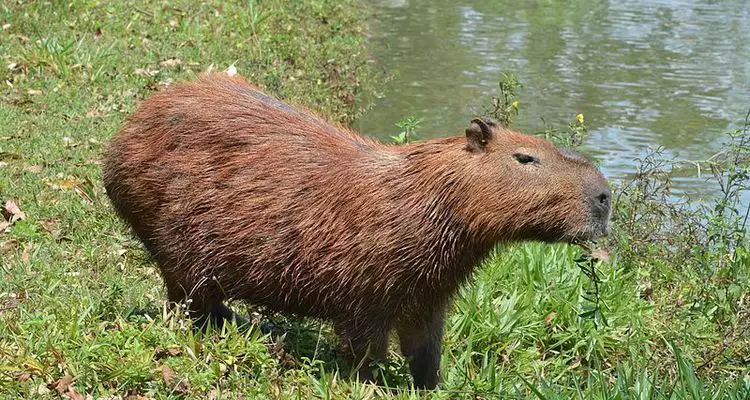
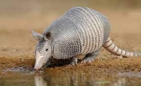

SOBRE O CERRADO
O Bioma Cerrado ocorre principalmente no Planalto Central Brasileiro e ocupa aproximadamente 24% do território brasileiro. O Cerrado é reconhecido como a Savana mais rica do mundo em biodiversidade. Até a década de 1950, os Cerrados mantiveram-se quase inalterados. A partir da década de 1960, com a transferência da Capital Federal, do Rio de Janeiro para Brasília, e a abertura de uma nova rede rodoviária, a cobertura vegetal natural deu lugar à pecuária e à agricultura intensiva.
CLIMA
A área abrangida pelo bioma Cerrado localiza-se na região de clima tropical sazonal. Esse tipo de clima apresenta duas estações bem-definidas: verões chuvosos e invernos secos. O período de seca começa no mês de maio e finaliza-se no mês de setembro. A umidade do ar nessa época pode chegar a 15%. O período chuvoso inicia-se em outubro e estende-se até o mês de abril. A temperatura média fica em torno de 22º C, variando ao longo dos períodos.
FAUNA & FLORA
A fauna do bioma Cerrado conta com um diversificado número de espécies animais, dos quais se destacam os insetos. Essa variedade é decorrente da limitação que esse bioma faz com os demais. Apesar disso, a fauna do Cerrado, principalmente relacionada aos invertebrados, é pouco conhecida.
Por ser um bioma bastante extenso, a vegetação do Cerrado não possui um único aspecto. É possível encontrar, ao longo de sua extensão, diversas fitofisionomias (aspectos da vegetação de uma região), nas quais há uma variedade de tipos de solo, clima e relevo.
 